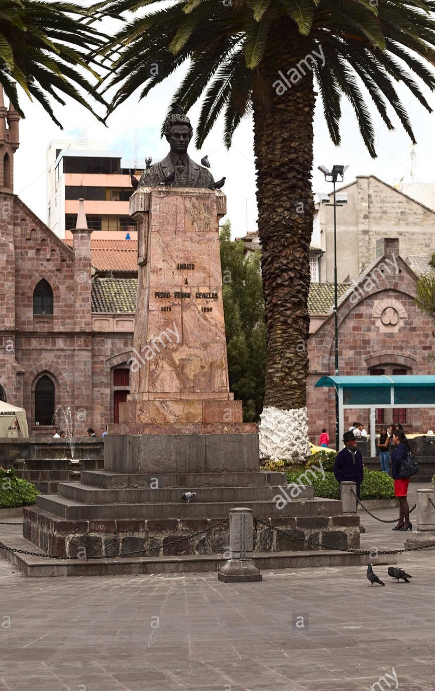

| Pedro Fermín Cevallos | |
|---|---|
| Esta edificación está construida con piedra labrada en forma de bloques de similar tamaño. Las gradas de su ingreso son tambión hechas en piedra y presenta una forma convexa. Las ventanas en las tres plantas del edificio son de madera. Considerada una joya arquitectónica por su concepción y sus detalles constructivos.La construcción de este edificio se inicia en enero de 1920 y se concluye el 23 de octubre de 1926. En el año de 1949 la edificación fue destruida parcialmente por el terremoto y su reconstrucción fue inaugurada el 12 de noviembre de 1951. |  |